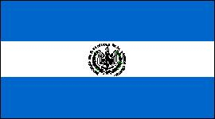

El Salvador
|  |  |
Información general
Nombre oficial: República de El Salvador
Área: 20 749,44 km²
Costas: 260,1 km
División política: 14 Departamentos
Departamento Cabecera
- Ahuachapán Ahuachapán
- Cabañas Sensuntepeque
- Cuscatlán Cojutepeque
- Chalatenango Chalatenango
- La Libertad Nueva San Salvador
- La Paz Zacatecoluca
- La Unión La Unión
- Morazán San Francisco (Gotera)
- San Miguel San Miguel
- San Salvador San Salvador
- San Vicente San Vicente
- Santa Ana Santa Ana
- Sonsonate Sonsonate
- Usulután Usulután
Unidad monetaria: Colón salvadoreño
1 Colón salvadoreño = 100 centavos
Idiomas: Español (oficial); inglés, también se hablan los dialectos indígenas nahuatl y lenca (no oficiales)
Fiesta nacional: 15 de septiembre, Día de la Independencia
Gentilicio: Salvadoreño
Hora oficial: GMT -6 horas (normal/verano)
Miembro de: ONU, OEA, MCCA, SELA
Curiosidades
La Joya de Cerén, sitio arqueológico, al noroeste de San Salvador, es una aldea prehistórica cuyos restos enterrados por las cenizas del volcán Laguna Caldera, muestran como era la vida de los campesinos centroamericanos, hace catorce siglos.
La flor nacional de El Salvador es el cafeto.
Información adicional en Internet.
Perfil Ecónomico
Perfil Demográfico
Población: 6.990.657 hab.
Densidad de
población: 322 hab/km²
Fuente http://www.digestyc.gob.sv/
Perfil Cultural
Alfabetismo: 7%
Religión:
- Católicos: 94,8%
- Protestantes: 3,3%
- No religiosos: 0,8%
- Otros: 1,1%
Algunas figuras notables:
- Claribel Alegría (1924). Poetisa
- Arturo Ambrogui (1878-1936). Poeta, novelista y periodista
- Juan José Cañas (1826-1900). Militar y poeta
- Juan Francisco Cisneros (1823-1878). Pintor
- Francisco Gavidia (1863-1955). Poeta, dramaturgo y ensayista
- Claudia Lars (1899-1974). Poetisa
- Alberto Masferrer (1865-1932). Ensayista y poeta
- Salvador Salarrué (1899-1976). Cuentista y novelista
- Domingo Santos (1892-1934). Compositor
Lugares declarados patrimonio mundial por la UNESCO
- Joya de Cerén.
Sistema de Gobierno
Constitución vigente: 20 de diciembre de 1983
Sistema ejecutivo: Presidente (elegido por voto popular para un período de cinco años) asistido por el Vicepresidente y el Consejo de Ministros.
Sistema legislativo: Asamblea Nacional (ochenta y cuatro miembros elegidos por sufragio para un término de tres años con derecho a la reelección).
Sistema judicial: Corte Suprema (catorce magistrados designados por la Asamblea Nacional) y demás tribunales competentes, Consejo de Elecciones y Corte de Cuentas.
Gobierno subdivisional: Cada departamento tiene un gobernador designado por el Presidente de la República.
Aproximación histórica
Situada entre Honduras y Guatemala, con costas al Pacífico, se encuentra El Salvador, la menor de las repúblicas centroamericanas. Con cerca de 6 millones de habitantes, en un área de unos 21 000 kilómetros cuadrados, tiene una densidad de población de 280 habitantes por kilómetro cuadrado.
Al llegar Pedro de Alvarado a la región en 1524, era habitada por indios pipi que la denominaban Cuscatlán. Fue colonia de España hasta 1821 en que se adhiere a la federación centroamericana. Movimientos separatistas fracasan en 1832 y 1833. La república es proclamada en 1841 y el país vive una etapa de inestabilidad política a finales del siglo XIX, lo que coincide con el florecimiento de la economía cafetalera.
Desde el punto de vista geográfico es una zona inestable en que se alzan numerosos picos volcánicos, abarca la región costanera, la cordillera volcánica, la altiplanicie y el valle de Lempa.
Su principal producto de exportación es el café y también productos textiles, alimentarios y tabaco.
Su capital San Salvador tiene cerca de 423 000 habitantes.
«-- ir al comienzo
«-- regresar